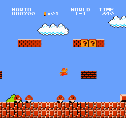

Ghid / Press start
Nu ai nevoie de nostalgie.
Doar de curiozitate.
Nu trebuie să fi crescut cu aceste jocuri ca să te bucuri de ele. Alege o variantă accesibilă și lasă primul nivel să-ți arate restul.
Înainte de primul nivel
Începe simplu.
Alege un joc și acordă-i puțin timp. Jocurile mai vechi nu au întotdeauna tutoriale, autosalvare sau explicații detaliate, așa că manualul poate fi foarte util.

O primă sesiune, în patru pași
-
Alege un singur joc
Mario pentru platforme, Tetris pentru puzzle sau Zelda dacă preferi explorarea.
-
Verifică ediția și comenzile
Citește manualul sau meniul de control. O variantă modernă poate avea butoane și opțiuni suplimentare.
-
Setează un obiectiv mic
Treci de primul nivel, completează zece linii sau descoperă o cameră nouă.
-
Observă înainte să repeți
Ce te-a surprins? Unde ai grăbit o mișcare? O încercare nouă are mai mult sens când schimbi ceva.
Alege platforma potrivită
Trei feluri de a te întoarce în timp.
Experiența originală este interesantă, dar nu este singura cale de a descoperi un joc.
| Variantă | Avantaj | Ce să verifici |
|---|---|---|
| Consolă și cartuș original | Hardware și controller din epocă | Starea consolei, regiunea și conectarea la televizor |
| Colecție sau relansare oficială | Acces simplu pe dispozitive actuale | Jocurile incluse, prețul și eventualul abonament |
| Emulator și copie autorizată | Configurare flexibilă și opțiuni de afișare | Compatibilitatea și dreptul de utilizare a fișierelor de joc |
O opțiune oficială este Nintendo Switch Online, care include biblioteci de jocuri clasice. Catalogul și nivelul de abonament necesar diferă; verifică oferta disponibilă pentru regiunea ta.
Micile detalii contează
Joacă mai confortabil.
- Păstrează proporțiile imaginii. Întinderea pe tot ecranul poate deforma personajele.
- Alege un volum plăcut. Muzica ajută la ritm, dar nu trebuie să fie obositoare.
- Fă pauze. O secțiune dificilă poate deveni mai clară după câteva minute.
- Folosește salvarea când există. Un punct de salvare îți permite să continui în altă zi.
- Caută manualul. Multe jocuri își explicau regulile în broșura din cutie.
Întrebări frecvente
Câteva răspunsuri înainte de start.
Deschide o întrebare pentru a citi răspunsul.
Ce înseamnă, de fapt, „retro”?
Nu există un an-limită acceptat de toată lumea. Termenul se folosește de obicei pentru jocuri și sisteme din generații anterioare. Retrocadia se concentrează pe perioada jocurilor 2D din anii 1980 și începutul anilor 1990.
Trebuie să cumpăr o consolă veche?
Nu. Colecțiile și relansările oficiale pot fi un început mai accesibil. O consolă originală merită luată în calcul dacă te interesează și hardware-ul, nu doar jocul.
Ce este un emulator?
Este un program care reproduce comportamentul unui alt sistem. Emulatorul și fișierele jocurilor sunt lucruri separate: folosește jocuri și fișiere pentru care ai permisiunea necesară.
De ce același joc are ani de lansare diferiți?
Lansările în Japonia, America de Nord și Europa nu aveau întotdeauna loc în același an. Pot exista și versiuni pentru mai multe platforme. În colecție precizăm ediția și, când este relevant, diferența dintre lansări.
Pot să joc direct pe Retrocadia?
Retrocadia este un ghid, nu o platformă de jocuri. Poți explora descrierile, compara titlurile și folosi resursele oficiale de mai jos pentru a găsi o variantă de joc potrivită.
Continuă explorarea
Resurse & imagini.
Mai multe informații despre jocuri, ediții și păstrarea istoriei lor.
-
The Strong National Museum of Play
Colecții despre istoria jocurilor și cultura jocului.
-
Nintendo Switch Online
Informații despre bibliotecile oficiale de jocuri clasice.
-
Povestea Tetris
Context despre Alexey Pajitnov și începuturile jocului.
-
RetroArch
Un proiect pentru rularea emulatorilor și a altor programe compatibile.